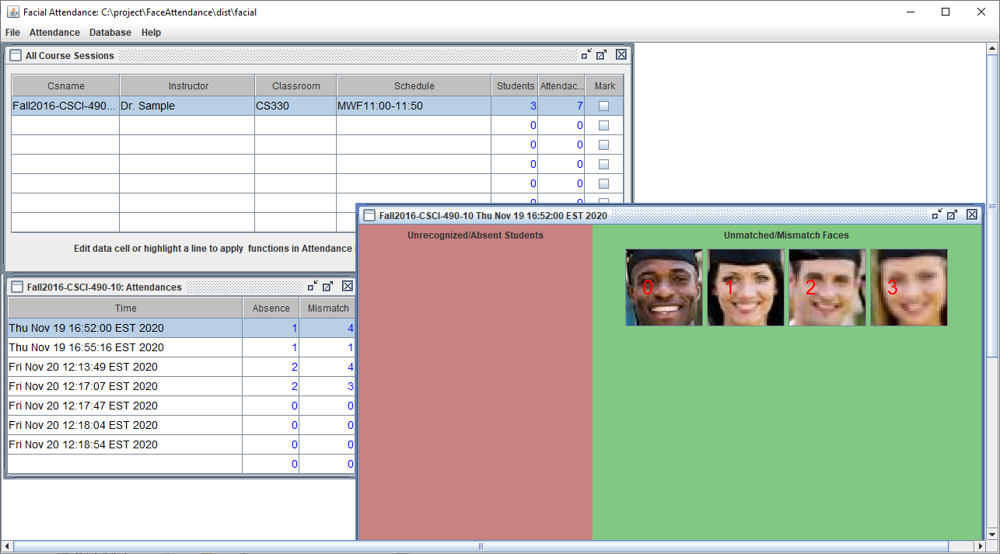

Facial Attendance
This desktop Java Application analyzes pictures of classes or meetings, performs AI facial detection and facial recognition to take attendance.
Download Executable:
FaceAttendance.jar
How to use:
Download the zip archive, unzip it
Download opencv_java310.dll from https://opencv.org/ and put it inside FaceAttend/lib.
Double click the FaceAttend/start.bat or FaceAttend/start.sh
